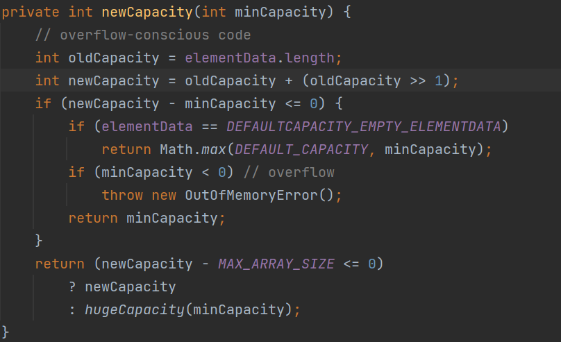
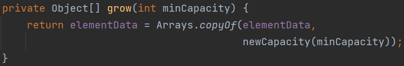

🧬Java ArrayList의 원리
iconcert8's log
Java의 ArrayList는 계속해서 element를 추가할 수 있다.
기본적으로 ArrayList는 내부적으로 array[]를 가지고 있다.
array[]의 경우 최초 길이 이상으로 element를 추가 할 수 없다.
어떻게 ArrayList는 가변적인 동작이 가능할까?
ArrayList에 add() 메소드를 타고가다 보면 newCapacity()메소드를 볼 수 있다.

newCapacity() 메소드는 array[]의 길이 늘리기 위해 새로운 길이를 반환한다.
새 길이 = 기존 길이 + (기존 길이 * 0.5)
그리고 새 길이로 array[]를 초기화 하고, 기존 배열을 복사한다.

결국, ArrayList는 내부배열을 재할당 함으로써 가변적인 길이를 갖게 되는 것이다.